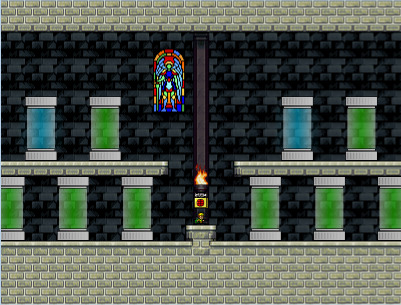

Fangames, also known as Guy or I Wanna games, are a niche genre of freeware platformer games. Whether you know of some popular fangames like Not Another Needle Game, Boshy, or Kamilia 3, or if you're totally new, this page will hopefully give you a quick overview of what the fangame community is all about!
Check out some game screenshots!


The basics
Fangames are based on super-tight player physics, a double jump, and instant and infinite respawns when you die. There are many genres that all share this common ground, including action-adventure, intricate platforming, bullet hell, medleys of other fangames, and more. Their full name is technically "IWBTG fangames" since they originated from a game called I Wanna Be The Guy (read below), but we shorten it to just "fangames".
All of the 5000+ fangames are free to download and play! And most are not GPU-intensive, so older computers can run them just fine. The default controls are, by tradition, Shift to jump, Z to shoot, R to respawn, and Escape to quit.
Our community plays and chats about fangames 24 hours a day on the Twitch IWBTG directory. Speedrunning fangames is popular, and we track records on our Speedrun.com page. And last but not least, our main website which indexes most of the fangames is Delicious Fruit.
Common fangame genres
Adventure fangames are generally well-rounded and have gimmicks and bosses.


Needle fangames focus on intricate, precise spike platforming.
Trap or "troll" fangames are overloaded with clever and funny traps.

In avoidance fangames, you dodge pattern and random bullet barrages in sync with music.
Medley fangames patch together small segments from a variety of fangames in sequence.
Connecting with the community
Twitch streams/chats are a big part of our community, since watching fangames is just as fun as playing them! Follow the Twitch IWBTG directory and Twitch team and interact in 24/7 fangame streams.
Much of our community is active on various discord servers. Here is a link to the public I Wanna Community Discord server. Many streamers also have their own very active discords - look in their Twitch channel descriptions! We also have a few discords for community events, like contests and marathons.
We do have a forum, but it's not very active anymore. We still do post about big events here though.
Choosing which games to play
5000+ fangames gives players a lot of choice! Sometimes that's too much choice though. Here's a list of options to find the right fangame for you.
1. Visit the Beginner Recommendations Page!
2. Check out curated lists by Geezer, Sunbla & Zero, Paragus, Denferok, Inferno.
3. Browse Delicious Fruit and search by rating, difficulty, tags, and more.
4. Ask friends in the community for recommendations based on what you like.


A little backstory
Fangame history begins in 2007 when Kayin made the original I Wanna Be The Guy, a game full of humor and challenge. At first, fangames of IWBTG closely imitated its formula of humorous traps and pop references. But over the years, their design gradually evolved into something else entirely. Today, fangames are an ecosystem of their own, with their own tropes and genres, and with authors and players from around the globe.
Fangames gradually became popular on Twitch simply because they're entertaining to watch. Speedrunning in particular is popular, with games like Boshy (featured in many a GDQ!), Kamilia 2, NANG (featured in AGDQ 2017!), and many more. As a community we also host an annual weekend-long Speedrun Marathon on Twitch.
Making fangames: the other side of the community
Making fangames is open to everyone, and can be very fun and rewarding. Upsides include: The base engine with player physics is a convenient starting point, there are many veteran fangame creators to get help from and collaborate with, and your game is guaranteed an audience and playtime on Twitch!
If you want to jump in, check out Klazen's Tutorial. Don't hesitate to ask the community for help! A good place to get help is in the I Wanna Community Discord server.
In closing
Hopefully you now have an idea of what fangames are, and how to connect with our community! If you have any lingering questions, or if something was confusing, please tell me since I'd like to make this page as good as it can be! I'm Patrick no. 0303 on Discord and Clockworkpat on Twitter.